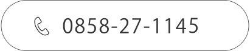

医療脱毛
- 脱毛Qなぜレーザーで脱毛できるのですか？
- 毛は多くのメラニンを含んでおり、波長755/1064nmのレーザー光がメラニン（黒い色）に吸収され、周辺組織に影響を与えることなく、毛全体に熱が伝播し毛髪を再生させる組織を破壊し、脱毛が行えるというメカニズムです。
- 脱毛Qレーザー脱毛は痛いですか？
- 部位や個人差はありますが、輪ゴムを弾いたような感覚がある程度です。
GentleMaxProは冷却ガスが噴射され、患部を瞬時に冷却しますので痛みも軽減されます。
＊痛みが我慢できない場合は麻酔ﾃｰﾌﾟや麻酔ｸﾘｰﾑを使用することもできますのでご相談ください。
- 脱毛Qレーザーを照射した後は痛いですか？
- 痛みは照射の瞬間に感じるもので、継続するような痛みではありません。人によっては少しヒリヒリした感じが残る方もいますが、時間の経過とともに治まります。
ヒリヒリ感・痛みが増強するような場合があればご連絡ください。
- 脱毛Q照射後に入浴は可能ですか？
- 当日はシャワー浴のみとしてください。照射部位は敏感になっています。当日は施術部位を強くこすらないで、泡立てた石鹸でやさしく洗ってください。
- 脱毛Q早く脱毛を終わらせたいので、1週間間隔で来院したいのですが・・？
- 毛根には毛周期という成長サイクルがあります。レーザーを毛乳頭と結びついていない退行期の毛に照射しても、毛乳頭には熱が伝わらないため脱毛効果が得られません。
またメラニンの含有量も少ないため、レーザー光が毛に対して反応しにくい状態です。休止期においては、肌に負担を与えるだけになります。「早く終わらせたいから」と毛が生えていない状態の皮膚にレーザーを当てると、肌に負担がかかり脱毛効果が得られず、通院回数が増えて費用もかさんでしまいます。
毛周期に合わせて、休止期や退行期だった毛が成長期に生え変わるまで待ってから、次回の照射を行うことが望ましいです。
- 脱毛Q何歳でも脱毛は可能ですか？
- 脱毛自体は可能です。実際に疾患により乳幼児に脱毛の治療を行うケースもあります。しかしながら、子供は成人の脱毛治療と比べて以下のようなリスクがあります。
1.第二次性徴期が終わるまでは、身体が成長しているので脱毛治療をうけても、その後、毛が生えてくる可能性があり、満足のいく脱毛効果を得ることのできない場合があります。
2.子供の肌の角質層は、大人の1/2～1/3程度と、大人よりも角質層が薄いので肌トラブルを起こしやすい。
3.学童期の子供の場合は日光の下で過ごす時間も長いので、日焼けしやすい。
4.子供の性格によっては、日焼け予防を行えないこともある。
＊また未成年者の場合は保護者の承諾書が必要です。倫理上の問題もあるのでご本人・保護者様の双方の同意のもとで治療を行います。
＊未成年の方で、お一人での施術が可能なお子様に限定させていただきます。（施術中は、保護者様の安全面を考慮し、保護者様の付き添いはご遠慮いただいています。）
- 脱毛Q妊娠中・授乳中でもレーザー脱毛できますか？
- レーザーがどのように、母体や胎児へ影響するのか解明されていない為お勧めはできません。
またホルモンバランスが変化することで肌が敏感になり、妊娠前よりも肌トラブルを起こしやすかったり、痛みを感じやすくなったりすることがあります。妊娠中は精神的にも不安定になりやすく、普通ならば気にならないことも神経質になりがちです。
稀にホルモンの関係で妊娠中から産後、一時的に毛が濃くなったり増えたりする方もいらっしゃいます。出産・授乳後に気持ちが落ち着いてからの脱毛をお勧めします。
- 脱毛Qアトピー体質ですが、レーザー脱毛は可能ですか？
- 肌の状態を診断する必要がありますが、自己処理に比べてレーザー脱毛の方がより安全に脱毛を行うことができます。特にアトピー性皮膚炎の場合は、カミソリ・ワックスなど自己処理をするとお肌を傷つけてしまうのでレーザー脱毛をお勧めします。
ただし、炎症が強く出ている部位や色素沈着が強い部位にはレーザーを照射できない場合があります。
- 脱毛Qニキビ肌でも顔脱毛はできますか？
- 赤みのない白いニキビであれば照射は可能です。ただし、ベピオゲル・デュアック配合ゲル・エピデュオゲルなどのお薬で治療されている場合は、脱毛前の1週間お薬の使用を中止してご来院ください。また中止できないようでしたら、お薬を塗っている部位を避けて照射いたします。
- 脱毛Qレーザー脱毛は副作用がありますか？
- 痛み・発赤・腫れが一時的に生じるケースがあります。稀に、一過性の炎症性色素沈着や軽いやけどのような症状が出現することもありますが、早い方で2～3週間、長い方でも半年程度で症状は改善します。
レーザーに対する反応をテスト照射にて確認いたしますので、ご安心ください。
- 脱毛Q自分で毛の処理する時は、毛を抜いているのですが、脱毛する時は少し生えてから行った方がいいのでしょうか？
- 毛根がない状態ではレーザーが反応しません。必ず毛を抜くような処理はお控えください。 毛抜き処理されているようでしたら、毛が生えてくるようになれば施術は可能です。 脱毛治療中は剃毛をお願いします。
美肌治療
- 美肌Q【エレクトロポレーション】治療は痛いですか？
- 個人差はありますが、微弱な電流を使用する施術ですので、ピリピリとした電気刺激を感じる方もいらっしゃいます。電気刺激に敏感な方には設定を調整して施術を行いますので、お気軽にご相談ください。
- 美肌Q【エレクトロポレーション】ダウンタイムはありますか？
- ダウンタイムはなく、施術直後から洗顔やメイクが可能です。
- 美肌Q【エレクトロポレーション】イオン導入との違いはなんですか？
- イオン導入：専用の美容液しか導入することができません。角質層（表面）にほとんどの成分がとどまり、真皮への浸透は塗布量の極少量しかできません。また分子（粒子）が大きい、コラーゲン、ヒアルロン酸、ホワイトニング系の 美容成分などはほとんど浸透しません。
エレクトロポレーション導入：イオン化できないものや分子量の大きい成分、脂溶性物質の美容成分も しっかりお肌の深部まで届けます。
特殊な電気パルスの力で瞬間的に肌層に孔（道）を作ることで多くの 美容有効成分をお肌の深部までしっかり届けます。
- 美肌Q【ハイドラシャワー】施術時間はどれくらいですか？
- 皮膚の状態や施術範囲によって異なりますが、顔の施術で15～20分程度です。
- 美肌Q【ハイドラシャワー】ダウンタイムはありますか？
- 基本的にはありません。施術直後は肌に軽い赤みが出ることがありますが、ほとんどの場合、時間と共に消失し、翌日までには治まります。
- 美肌Q【ハイドラシャワー】痛みはありますか？
- 使用する薬剤によってピリピリした刺激を感じる方もいらっしゃいますが、基本的には痛みがなく、麻酔等を必要としないマイルドな施術です。 ※個人差がございます。
- 美肌Q【ハイドラシャワー】1回の施術で効果は出ますか？
- 1回の施術でも肌のトーンアップ、肌のうるおいを実感していただけますが、より良い肌の状態を保つため、定期的な施術を推奨しています。
- 美肌Q【ハイドラシャワー】施術後すぐにメイクはできますか？
- 施術後すぐに通常どおりのメイクが可能です。
余分な角質や皮脂を除去し、美容成分をしっかり導入するため、施術後はメイクの乗りが良くなります。
- 美肌Q【Picoway】強い痛みはありますか？
- お肌の表面を輪ゴムで弾かれたような痛みがあります。ほとんどの方が耐えられる程度の軽い痛みです。
痛みが不安な方は麻酔クリームを塗布してから照射を行います。
- 美肌Q【Picoway】ダウンタイムはありますか？
- ピコトーニング：治療直後は照射部位が少し赤くなったり、火照ったりすることがありますが通常は数時間で収まります。基本的にはダウンタイムの少ない治療です。
ピコフラクショナル：治療直後はじりじりした痛みや火照りがあります。当日のメイクはご遠慮いただいています。 赤みも１～２日は続くこともあります。ブツブツを伴うこともあります。
ピコショット：大きさにもよりますが1週間～10日程度でかさぶたが出来る場合があります。
- 美肌Q【Picoway】何回くらいの治療を受ければ効果を感じられますか？
- 肌の状態など個人差はあります。通常ピコショットの場合小さいものであれば1回の施術で効果を実感できることもありますが、1～3回は必要です。トーニングの場合4～8回、フラクショナルの場合、施術後1～2週間ほどで効果を感じられますが、3～5回程度の施術を重ねる必要があります。
内服や点滴、エレクトロポレーションなどを併用していただくことでさらにお肌のトーンアップを感じていただけます。
- 美肌Q【Picoway】ピコレーザーの照射後、当日の運動や飲酒は可能でしょうか？
- 照射後数日は過度な飲酒、ヨガ、岩盤浴、過度な運動など血行が良くなることはお控え頂いております。
- 美肌Q【Picoway】治療後の注意点はありますか？
- 日焼けを避け、外出時には日焼け止めクリーム等でお肌を保護してください。また、お肌がデリケートになっているので、照射部分をこするなど、刺激を与えないよう注意してください。
- 美肌Q【Picoway】日焼け予定がある場合、どのくらい間隔をあけて施術予約を取るのが良いでしょうか？
- 日焼けした肌にレーザーを照射すると火傷のリスクがある為、日焼け予定がある場合は前後2週間以上あけて施術予約をお取り頂くようお願い致します。
- 美肌Q【ダーマペン4】施術中の痛みは強いですか？
- ダーマペン4の施術前に麻酔クリームを塗布しますので、施術中に痛みを感じることはほとんどありません。施術中にもし痛みが気になるようでしたら、針の深さを調整しますので、お気軽にお声かけください。
- 美肌Q【ダーマペン4】ダーマペン4は1回だけでも効果を感じられますか？
- 1回でも効果を感じられる方もありますが、期待した効果を実感する目安は5～6回の施術が必要となるケースが多いです。お肌の状態によっては、4週間に1回（計3～10回）の頻度で定期的にメンテナンスすることで、若々しい素肌を維持することができます。
- 美肌Q【ダーマペン4】傷は残りますか？
- ダーマペン4の針のサイズは、超極細針（0.2mm）なので施術直後の傷穴はほとんど目立ちません。術後1週間程度を過ぎれば、完全に傷穴が塞がり目立たなくなりますので、ご安心ください。
- 美肌Q【ダーマペン4】効果はどのくらいで実感できますか？
- ダーマペン4の効果は、平均3～7日間ほどで美肌効果を実感することができます。
- 美肌Q【ダーマペン4】ダウンタイムはどれくらいですか？
- ダーマペン4の穿刺深度によりますが、ダウンタイムの期間は数日から1週間程度で、時間経過とともに消失します。
※施術当日にスキンケアを行うとダウンタイムが長引いたり、スキンケアの成分が穴を塞ぎ傷が残る場合がありますのでご注意ください。
- 美肌Q【ダーマペン4】施術後に気をつけることはありますか？
- ダーマペン4の施術当日は、スキンケア・日焼け止め・洗顔ができません。当日は、お風呂もなるべく控えてシャワーのみでお願いします。施術翌日からスキンケア（特に保湿）を十分に行い、外出する際は日焼け止めを塗るなどの紫外線対策を行ってください。お顔の赤みが引くまでは、お肌に刺激を与えないようにご注意ください。
- 美肌Q【ダーマペン4】妊娠中ですがダーマペン４の施術を受けられますか？
- 申し訳ありませんが、妊娠・授乳中の方の施術はできません。
- 美肌Q【リフテラV】妊娠中ですがリフテラVの施術を受けられますか？
- 申し訳ありませんが、妊娠・授乳中の方の施術はできません。
- 美肌Q【リフテラV】日常生活に影響がありますか？
- 基本的にダウンタイムはありませんので、施術後すぐに通常通りお過ごしいただけます。 お化粧は施術後すぐから可能です。施術後にほてり感や赤み、むくみが出る場合がありますが、通常数時間から翌日までには落ち着きます。 また、ごくまれに1〜2週間ほど腫れが続く場合があります。この時に冷やしても構いませんが、冷やし過ぎるとハリが出にくくなる可能性があります。
- 美肌Q【リフテラV】照射時間はどれくらいかかりますか？
- 皮膚の状態や施術部位の大きさにより個人差がありますが、顔全体の照射なら20〜30分程度です。
- 美肌Q【リフテラV】効果はどれくらいで現れますか？
- 個人差はありますが、施術直後から変化が見られ、ハリ感は2〜3週間後からご実感いただけます。
- 美肌Q【リフテラV】効果はどれくらい続きますか？
- 皮膚状態や受けた施術の強さ、回数にもよりますが、効果は約3ヶ月間ほど持続すると言われています。たるまない皮膚へと肌を強くするには持続と効果アップのために月に1回のメンテナンスをお勧めしています。
- 美肌Q【リフテラV】施術中、施術後の痛みはどうですか?
- 施術の特性上、強さや照射数によっては多少の刺激感を感じることがあります。施術後は1～2週間ほど筋肉痛のような違和感を感じる場合もあります。
- 美肌Q【リフテラV】目に見える効果はどのくらいで現れますか?
- 施術直後から効果を実感できますが、施術後約6～8週間後に最大の効果がみられます。
- 美肌Q【リフテラV】どのくらいの頻度で通院したらよいですか?
- 初回～3回目までは4週に1回、その後4回目以降は3か月～半年に1回を継続的に行っていただくことで効果が持続します。
- 美肌Q【リフテラV】治療を受けられない場合はありますか?
- 照射部位に手術で糸やプレートが入っている方、妊娠中、ペースメーカーや除細動器が入っている方は施術を受けることができません。
- 美肌Q【リフテラV】ほかの美容の施術と同日は可能ですか?
- 脱毛以外のレーザー、エレクトロポレーションなどと同じ日に受けていただくことが可能です。詳しくはスタッフにお尋ねください。
RESERVE
ご予約はお電話にて受け付けています。
ご予約・ご質問への電話対応は、診察時間内のみ受け付けております。

- 月曜〜水曜・金曜
- 9:00~12:30 / 15:00~17:30
- 木曜・土曜
- 9:00~12:30
Instagram

LINE


- 住所
- 〒682-0806
鳥取県倉吉市昭和町2丁目233
- 電話番号
- 0858-27-1144
0858-27-1145(美容専用)
- 診療時間
- 午前 9:00~12:30
午後 15:00~18:00※木曜・土曜は午前のみ
- 休診日
- 日曜・祝日
- 設備
- 駐車場あり